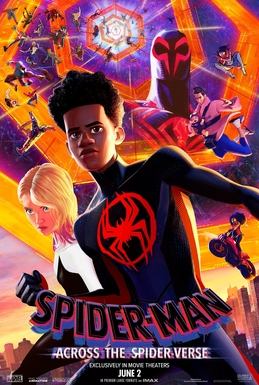
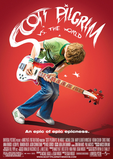

At Hephzibah
 
GENRE: Family/Action RUNTIME: 2h 20m
Ratings: 4.3/5
After reuniting with Gwen Stacy, Brooklyn's full-time, friendly neighborhood Spider-Man is catapulted across the Multiverse, where he encounters a team of Spider-People charged with protecting its very existence. However, when the heroes clash on how to handle a new threat, Miles finds himself pitted against the other Spiders. He must soon redefine what it means to be a hero so he can save the people he loves most.
GENRE: Action/Comedy/Romance RUNTIME: 1h 52m
Ratings: 4.5/5
As bass guitarist for a garage-rock band, Scott Pilgrim (Michael Cera) has never had trouble getting a girlfriend; usually, the problem is getting rid of them. But when Ramona Flowers (Mary Elizabeth Winstead) skates into his heart, he finds she has the most troublesome baggage of all: an army of seven evil exes who he must defeat to win over her heart.
GENRE: Family/Comedy RUNTIME: 1h 32m
Ratings: 4.7/5
After returning from their honeymoon and showing home movies to their friends, Shrek and Fiona learn that her parents have heard that she has married her true love and wish to invite him to their kingdom, called Far Far Away. The catch is: Fiona's parents are unaware of the curse that struck their daughter and have assumed she married Prince Charming, not a 700-pound ogre with horrible hygiene and a talking donkey pal.